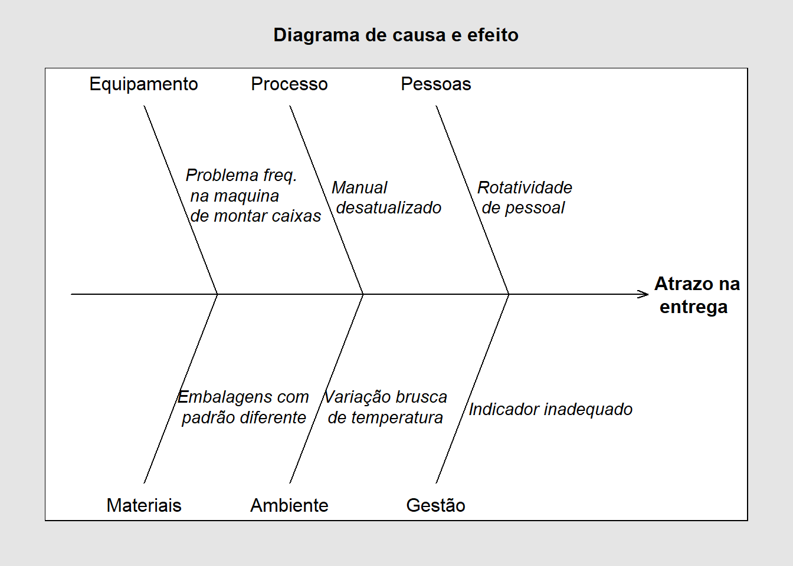

Code
library(qcc)
cause.and.effect(
cause = list(Equipamento = c("Problema freq. \n na maquina \n de montar caixas"),
Processo = c("Manual \n desatualizado"),
Pessoas = c("Rotatividade \n de pessoal"),
Materiais = c("Embalagens com \n padrão diferente"),
Ambiente = c("Variação brusca \n de temperatura"),
Gestão = c("Indicador inadequado")),
effect="Atrazo na \n entrega",
title = "Diagrama de causa e efeito")